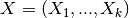
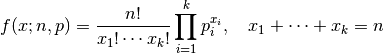
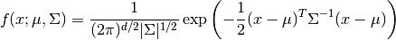
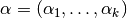
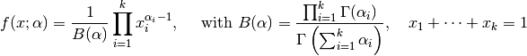

Multivariate Distributions¶
Multivariate distributions are probabilistic distributions whose samples are vectors. The Distributions package implements several commonly used multivariate distributions, including Multinomial, Multivairate Normal and Dirichlet.
Common Interface¶
The methods listed as below are implemented for each multivariate distribution, which provides a consistent interface to work with multivariate distributions.
Computation of statistics¶
- dim(d)¶
Return the sample dimension.
- mean(d)¶
Return the mean vector of distribution d.
- var(d)¶
Return the vector of component-wise variances of distribution d.
- cov(d)¶
Return the covariance matrix of distribution d.
- cor(d)¶
Return the correlation matrix of distribution d.
Probability evaluation¶
- pdf(d, x)¶
Return the probability density evaluated at x.
- If x is a vector, it returns the result as a scalar.
- If x is a matrix with n columns, it returns a vector r of length n, where r[i] corresponds to x[:,i] (i.e. treating each column as a sample).
- pdf!(r, d, x)
Evaluate the probability densities at columns of x, and write the results to a pre-allocated array r.
- logpdf(d, x)¶
Return the logarithm of probability density evaluated at x.
- If x is a vector, it returns the result as a scalar.
- If x is a matrix with n columns, it returns a vector r of length n, where r[i] corresponds to x[:,i].
- logpdf!(r, d, x)
Evaluate the logarithm of probability densities at columns of x, and write the results to a pre-allocated array r.
Note: For multivariate distributions, the pdf value is usually very small or large, and therefore direct evaluating the pdf may cause numerical problems. It is generally advisable to perform probability computation in log-scale.
Sampling¶
- rand(d)¶
Sample a vector from the distribution d.
- rand(d, n)
Sample n vectors from the distribution d. This returns a matrix of size (dim(d), n), where each column is a sample.
- rand!(d, x)
Draw samples and output them to a pre-allocated array x. Here, x can be either a vector of length dim(d) or a matrix with dim(d) rows.
Multinomial Distribution¶
The multinomial distribution generalizes the binomial distribution. Consider n independent draws from a Categorical distribution over a finite set of size k, and let  where X_i represents the number of times the element i occurs, then the distribution of X is a multinomial distribution. Each sample of a multinomial distribution is a k-dimensional integer vector that sums to n.
The probability mass function is given by

Multinomial(n, p) # Multinomial distribution for n trials with probability vector p
Multivariate Normal Distribution¶
The multivariate normal distribution is a multidimensional generalization of the normal distribution. The probability density function of a d-dimensional multivariate normal distribution with mean vector μ and covariance matrix Σ is

# Let sig be a scalar
MultivariateNormal(mu, sig) # Multivariate normal distribution
# with mean mu and covariance sig^2 * I
# Let v be a vector
MultivariateNormal(mu, v) # Multivariate normal distribution
# with mean mu and covariance diagm(v)
# Let C be a positive definite matrix
MultivariateNormal(mu, C) # Multivariate normal distribution
# with mean mu and covariance C
To save some typing, we introduce the name MvNormal as an alias of MultivariateNormal. One can use MvNormal in the place of MultivariateNormal (e.g. MvNormal(mu, C).)
The MultivariateNormal type and specialized covariance¶
MultivariateNormal is a parameteric type declared as below, which takes Cov, the type of the covariance, as an argument, thus enables specialized handling of covariance matrices of different structures.
immutable MultivariateNormal{Cov<:AbstractPDMat} <: ContinuousMultivariateDistribution
In particular, ScalMat, PDiagMat and PDMat are respectively used as the covariance type for cases where the covariance matrix is respectively isotropic, diagonal, or a full matrix. Consequently, more efficient implementation will be internally used when handling covariance matrix with special structures.
Dirichlet Distribution¶
The Dirichlet distribution is often used the conjugate prior for Categorical or Multinomial distributions. The probability density function of a Dirichlet distribution with parameter  is

# Let alpha be a vector
Dirichlet(alpha) # Dirichlet distribution with parameter vector alpha
# Let a be a positive scalar
Dirichlet(k, a) # Dirichlet distribution with parameter a * ones(k)